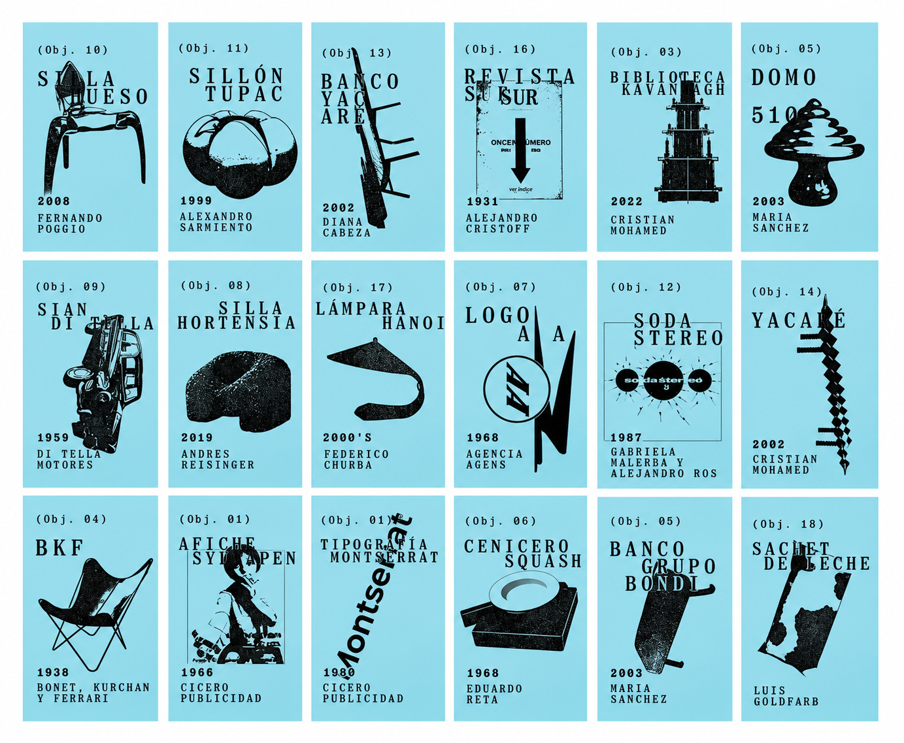
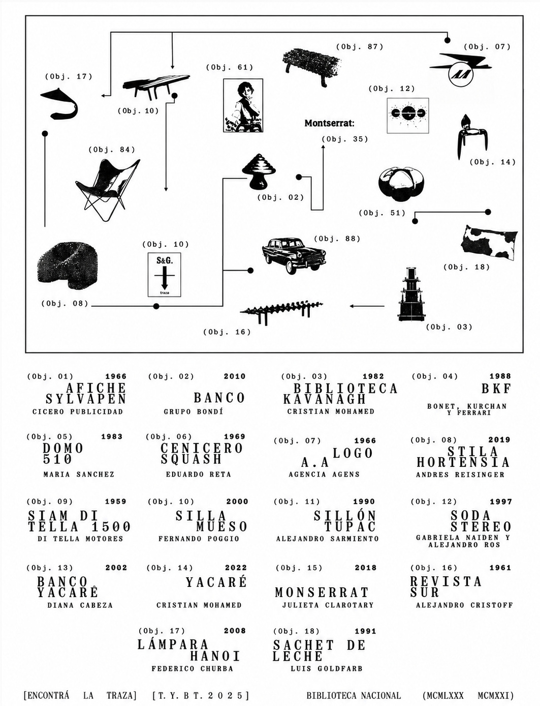

[ Anticolección ]
En esta anticolección cada objeto se asocia a su origen. Descubrí sus trazas.
[02] El proyecto
Origen que continúa activo.
Todas las piezas de esta colección tienen algo en común, parten de un origen.
La cultura existe a través de la supervivencia y relectura de imágenes que reaparecen en nuevos tiempos bajo distintas configuraciones. La historia deja de ser lineal y el pasado vuelve a activarse, tomando nuevos sentidos.
Cada objeto de esta colección conserva el vestigio de otro anterior, que actúa como referencia conceptual, material o formal. Nunca se produce de manera exacta, sino que el diseñador la apropia y reinterpreta para crear algo nuevo.
[ Impresos ]
La colección se extiende a distintos formatos impresos que permiten descubrir las piezas y reconocer las trazas que las conectan.

01 / Catálogo de piezas

02 / Catálogo impreso